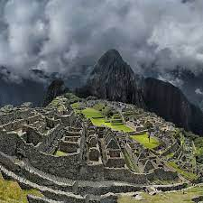

Machu Pichu

Machu Picchu es una ciudadela inca ubicada
en las alturas de las montañas de los Andes en Perú,
sobre el valle del río Urubamba. Se construyó en el siglo
XV y luego fue abandonada,
y es famosa por sus sofisticadas paredes de piedra seca.